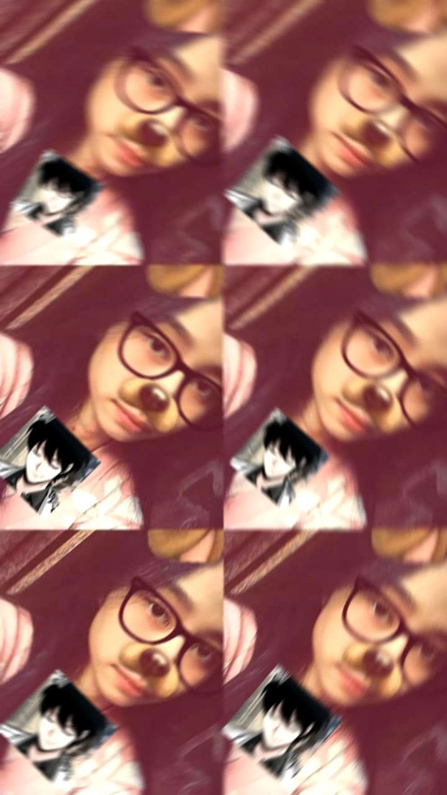

likes: Eating Spicy Food, Playing Games, Listening To Music, Reading Manhwa
dislikes:Math
16 y/o • Taurus
5 Majo 2009

Hii, kenalin nama saya laviola, biasanya orang-orang sekitar ku memanggilku lala, viola, dan el, saya adalah seorang remaja yang pemalu dan sulit untuk berinteraksi dengan orang baru, saya dilahirkan di semarang oleh ibuku, pada tanggal 5 mei 2009, dan pada saat ini aku berusia 16 tahun, pada bulan mei besok aku berusia 17 tahun.
Pada umur saya saat ini, saya memiliki tinggi badan sekitar 162cm dan memiliki berat badan sekitar 38-39kg, sangat kecil sekali bukan?. dengan kondisi ku yang sedikit kurus, saya selalu mencoba berusaha untuk menjaga kesehatan tubuh saya sendiri agar lebih baik kedepannya dan aktif dalam melakukan kegiatan apapun.
Dalam soal makanan, saya memiliki makanan favorit yaitu ayam geprek dan juga kangkung, untuk minuman saya lebih classic saja, yaitu es air putih.
Jika ada waktu luang, saya selalu menggunakannya dengan bermain game , mendengarkan musik dan juga mengedit. Itu semua adalah hobiku untuk membantuku mengisi waktu yang kosong dan juga bisa menghilangkan rasa stress setelah mengerjakan tugas atau aktivitas lainnya.
Saya adalah pribadi yang cenderung pemalu dan tidak mudah bergaul dengan orang di sekitar. saya sering merasa canggung ketika berada di lingkungan baru atau saat harus memulai percakapan terlebih dahulu. Karena itu, saya sendiri lebih nyaman mengamati daripada menjadi pusat perhatian.